Syntetisk¶
import zipfile as zf
files = zf.ZipFile("/home/jupyter/SyntheticNAV/dsData.zip", 'r')
files.extractall('/home/jupyter/SyntheticNAV/Data')
files.close()
import pandas as pd
from DataSynthesizer.DataDescriber import DataDescriber
from DataSynthesizer.DataGenerator import DataGenerator
from DataSynthesizer.ModelInspector import ModelInspector
from DataSynthesizer.lib.utils import read_json_file, display_bayesian_network
class DataSynthesizer:
def __init__(self, input_data, description_file, synthetic_data, mode,
threshold_value=20, num_tuples_to_generate=32561):
self.input_data = input_data
self.description_file = description_file
self.synthetic_data = synthetic_data
self.mode = mode
self.threshold_value = threshold_value
self.num_tuples_to_generate = num_tuples_to_generate
def random_data_describer(self):
describer = DataDescriber(category_threshold=self.threshold_value)
describer.describe_dataset_in_random_mode(self.input_data)
describer.save_dataset_description_to_file(self.description_file)
def generate_synthetic_data(self):
generator = DataGenerator()
generator.generate_dataset_in_random_mode(self.num_tuples_to_generate, self.description_file)
generator.save_synthetic_data(self.synthetic_data)
def independent_data_describer(self, categorical_attributes, candidate_keys):
describer = DataDescriber(category_threshold=self.threshold_value)
describer.describe_dataset_in_independent_attribute_mode(dataset_file=self.input_data,
attribute_to_is_categorical=categorical_attributes,
attribute_to_is_candidate_key=candidate_keys)
describer.save_dataset_description_to_file(self.description_file)
def correlated_data_describer(self, categorical_attributes, candidate_keys, epsilon, degree_of_bayesian_network):
describer = DataDescriber(category_threshold=self.threshold_value)
describer.describe_dataset_in_correlated_attribute_mode(dataset_file=self.input_data,
epsilon=epsilon,
k=degree_of_bayesian_network,
attribute_to_is_categorical=categorical_attributes,
attribute_to_is_candidate_key=candidate_keys)
describer.save_dataset_description_to_file(self.description_file)
def plot_comparision(self):
input_df = pd.read_csv(self.input_data, skipinitialspace=True)
synthetic_df = pd.read_csv(self.synthetic_data)
attribute_description = read_json_file(self.description_file)['attribute_description']
inspector = ModelInspector(input_df, synthetic_df, attribute_description)
for attribute in synthetic_df.columns:
inspector.compare_histograms(attribute)
inspector.mutual_information_heatmap()
random_synthesizer = DataSynthesizer(input_data='/home/jupyter/SyntheticNAV/Data/data/adult_ssn.csv',
description_file='/home/jupyter/SyntheticNAV/Data/out/random_mode/description.json',
synthetic_data='/home/jupyter/SyntheticNAV/Data/out/random_mode/sythetic_data.csv',
mode='random_mode')
random_synthesizer.random_data_describer()
random_synthesizer.generate_synthetic_data()
random_synthesizer.plot_comparision()
 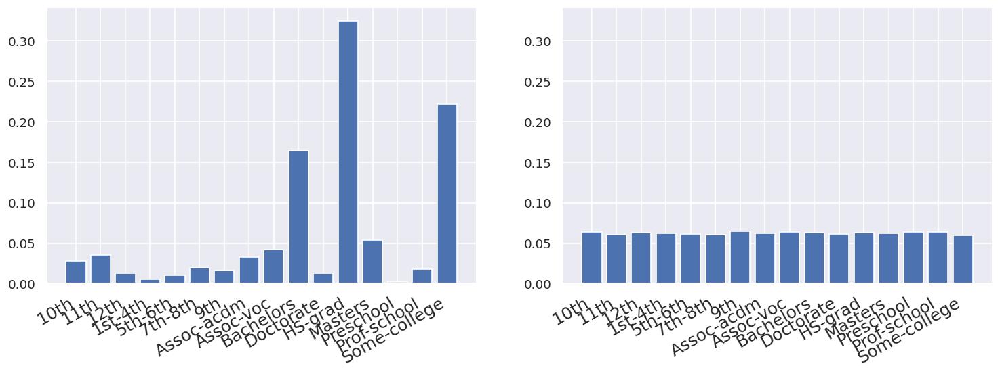
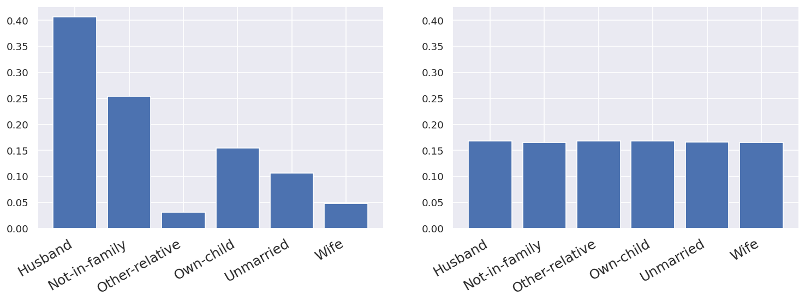
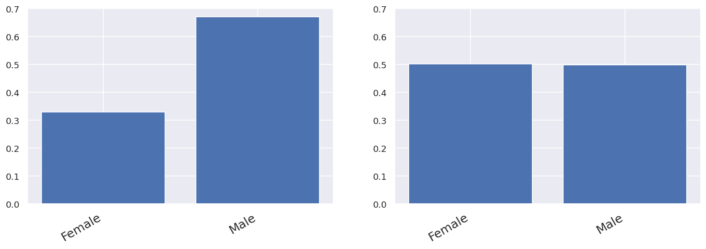
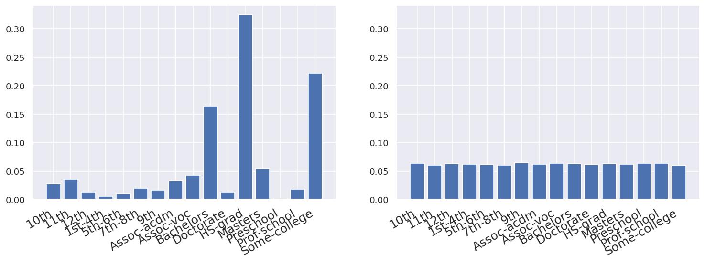
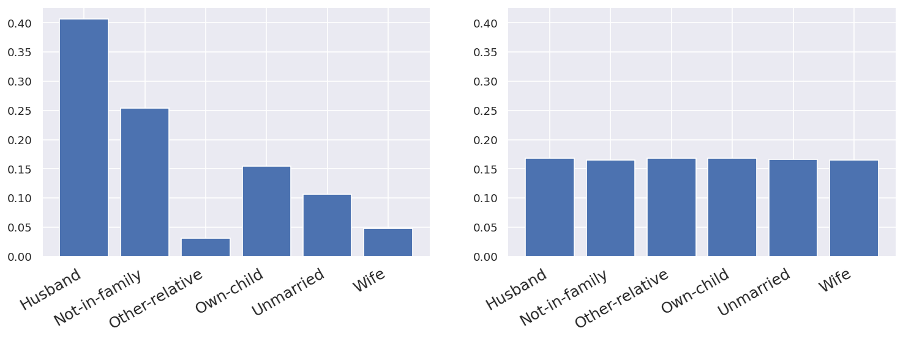
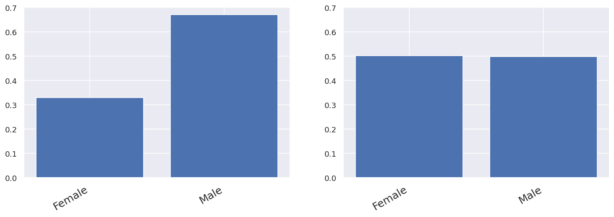


independent_synthesizer = DataSynthesizer(input_data='/home/jupyter/SyntheticNAV/Data/data/adult_ssn.csv',
description_file='/home/jupyter/SyntheticNAV/Data/out/independent_attribute_mode/description.json',
synthetic_data='/home/jupyter/SyntheticNAV/Data/out/independent_attribute_mode/sythetic_data.csv',
mode='independent_mode')
categorical_attributes = {'education': True}
candidate_keys = {'age': False}
independent_synthesizer.independent_data_describer(categorical_attributes=categorical_attributes,
candidate_keys=candidate_keys)
independent_synthesizer.generate_synthetic_data()
independent_synthesizer.plot_comparision()
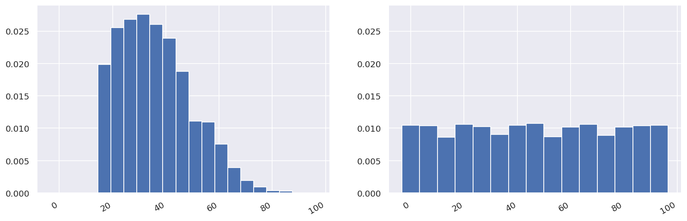


 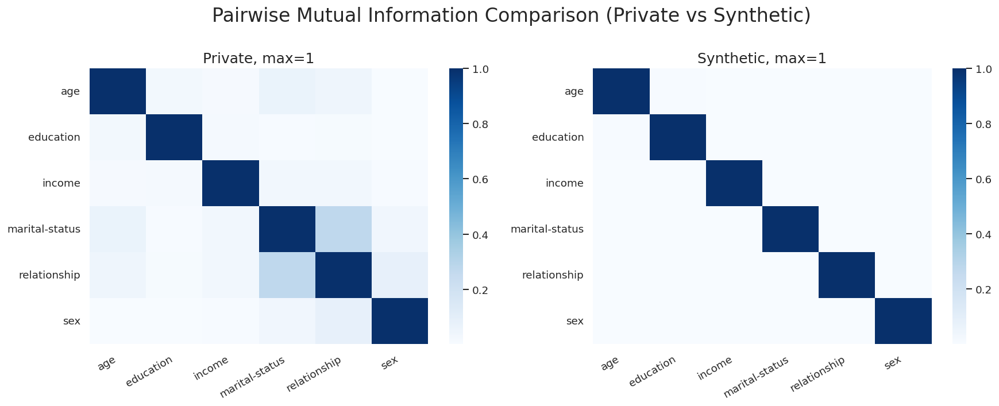
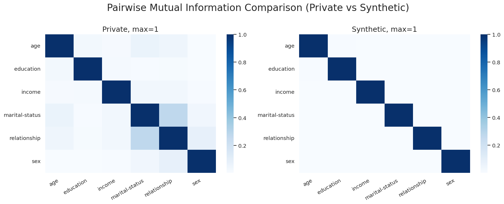
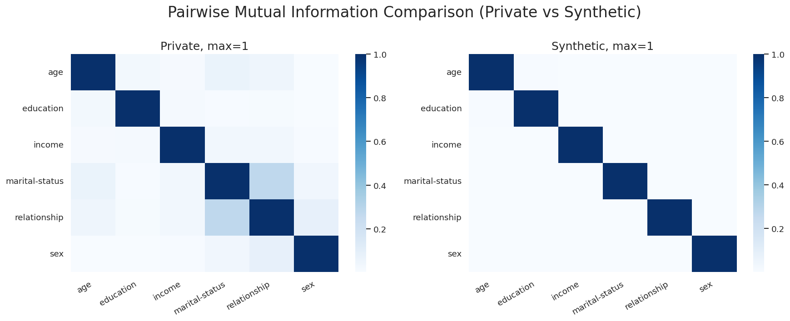
correlated_synthesizer = DataSynthesizer(input_data='/home/jupyter/SyntheticNAV/Data/data/adult_ssn.csv',
description_file='/home/jupyter/SyntheticNAV/Data/out/correlated_attribute_mode/description.json',
synthetic_data='/home/jupyter/SyntheticNAV/Data/out/correlated_attribute_mode/sythetic_data.csv',
mode='correlated_attribute_mode')
categorical_attributes = {'education': True}
candidate_keys = {'ssn': True}
epsilon = 1
degree_of_bayesian_network = 2
correlated_synthesizer.correlated_data_describer(categorical_attributes=categorical_attributes,
candidate_keys=candidate_keys,
epsilon=epsilon,
degree_of_bayesian_network=degree_of_bayesian_network)
correlated_synthesizer.generate_synthetic_data()
correlated_synthesizer.plot_comparision()
================ Constructing Bayesian Network (BN) ================
Adding ROOT relationship
Adding attribute marital-status
Adding attribute age
Adding attribute sex
Adding attribute education
Adding attribute income
========================== BN constructed ==========================
 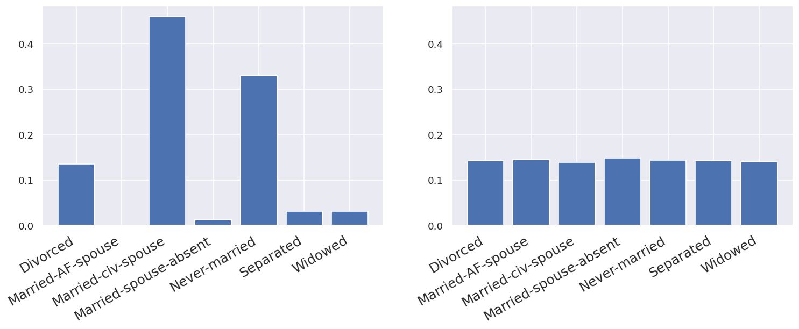
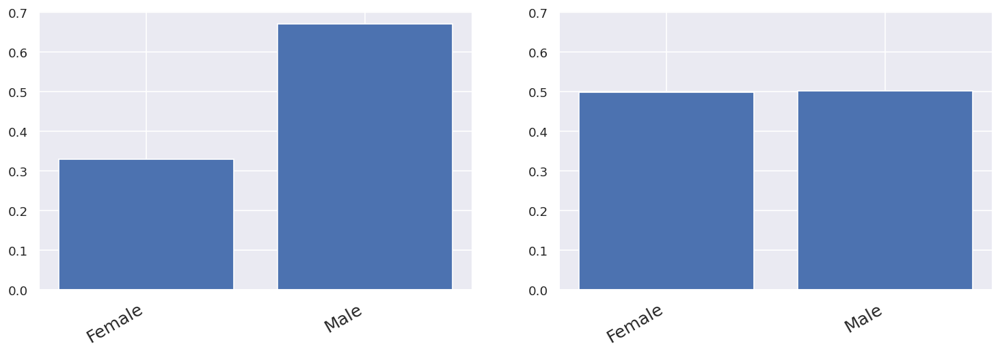
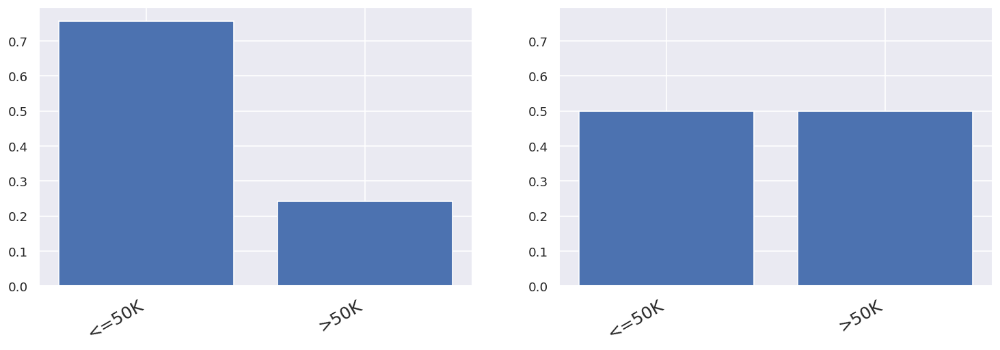
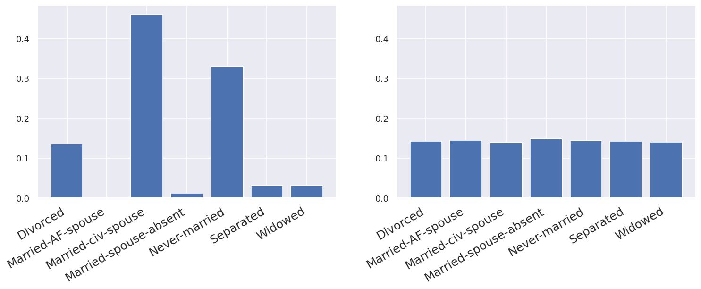
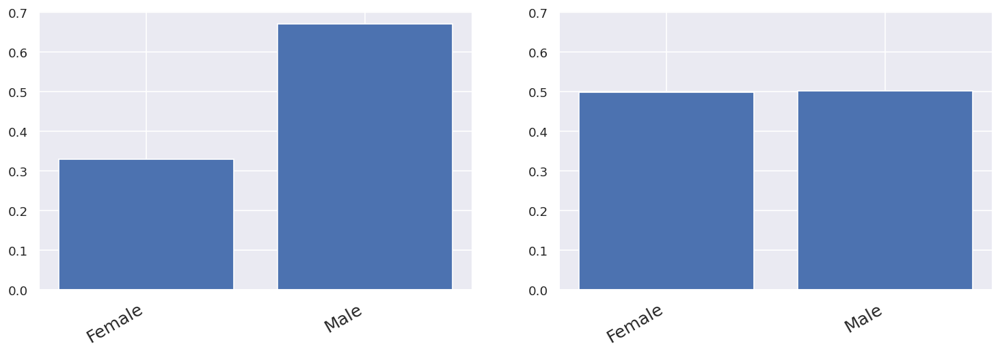
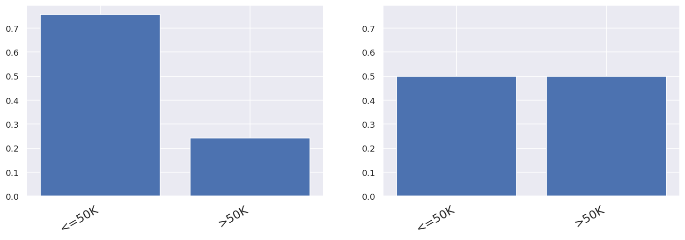

class DataSynthesizer:
class Mode:
class DataSynthesizer:
class Mode: